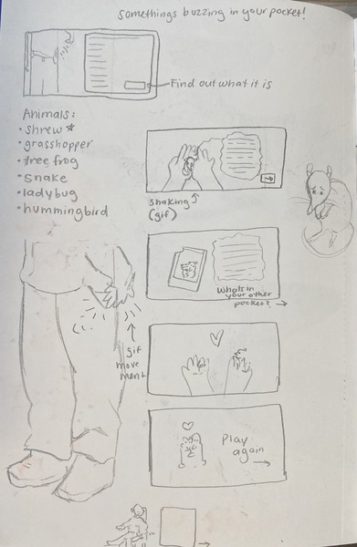

In my sketch, I worked on creating thumbnails to storyboard what I wanted each screen to look like for my Madlibs, labeling movement along the way. I know I wanted the hands to be in the perspective of the person looking at the screen, but I workshopped how I wanted the first frame with the buzzing pocket to look. I wanted the sequence to play out like a story where you discover what's in your pocket, there is a question and a return, and a conclusion where there is the option to play again. In the digital comp frames above, I chose a red and green color palette and created quick refined sketches to place where I want the character elements to go (like the person, the small animal, and the hands). I chose a fun and friendly font to match the friendly encounter with a small animal who has a lot to say.